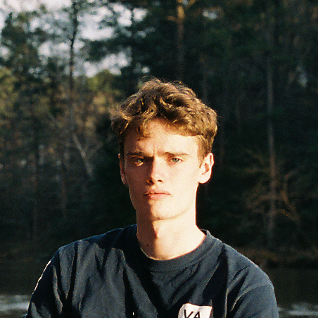

Isaac Neal
In my spare time I love to cook - the creativity and mindless repetition involved in preparing a meal both appeal to me. I'm an avid reader and recently finished an English translation of 'iQ84' by Haruki Murakami. I love music, and play guitar, piano, and sing poorly. I'm also an amateur photographer, mostly interested in film photography. Some of my favourite photographers are Man Ray, Robert Frank, William Eggleston, and Alex Prager.